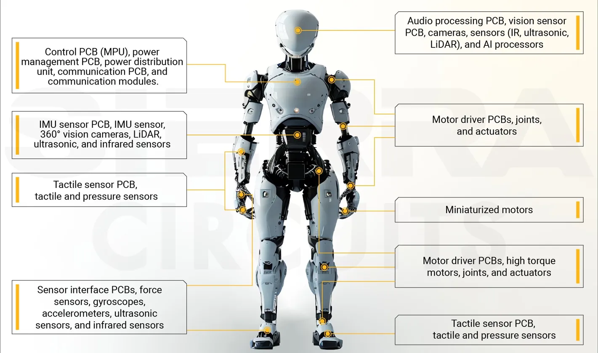

Humanoida robotar
Vad är en humanoid robot?
Humanoida robotar är designade för att likna människor både i utseende och rörelse. De har ofta ett huvud, en kropp, armar och ben.
De kan gå, prata och ibland visa känslor. Kända exempel är Asimo från Honda och Atlas från Boston Dynamics.
Funktioner
Humanoida robotar kan kommunicera med människor genom tal och gester.
De kan navigera i miljöer som är byggda för människor, som hem och kontor.
De används inom forskning, utbildning och som personliga assistenter.
Fakta
Den första humanoida roboten, WABOT-1, byggdes i Japan 1973.
Moderna humanoida robotar kan springa, hoppa och till och med göra kullerbyttor.
De är bland de dyraste och mest avancerade robotarna som finns idag.
Framtid
I framtiden kan humanoida robotar användas som assistenter i hemmet och på arbetsplatsen.
De kan hjälpa äldre och personer med funktionsnedsättningar att leva mer självständigt.
Med bättre AI kan de bli svåra att skilja från riktiga människor i sociala situationer.
